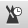

Um das Metronom zu aktivieren, wählen Sie in der Menüleiste Ton > Metronom aus oder klicken Sie auf (Sie kõnnen die Auszählung einen Takt bevor die Partitur gelesen wird, durch einen Klick auf die Schaltfläche

sehen).
Das Metronom gibt das Tempo der Partitur während der Wiedergabe an. Aber Sie kõnnen das Metronome auch selbständig ohne Partitur nutzten:
Erstellen Sie eine neue Datei (Menü Datei > Neu).
Wählen Sie das gewünschte Tempo (Menü Ton > Tempo).
Aktivieren Sie die Widergabe in Endlosschleife (Menü Ton > in Schleifen spielen...).
Starten Sie die Wiedergabe (Menü Ton > Wiedergabe von Anfang an).
Der leere Takt wird immer wieder wiederholt.